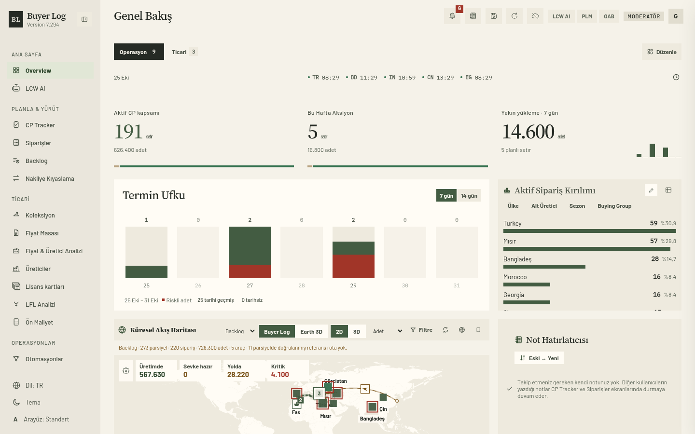
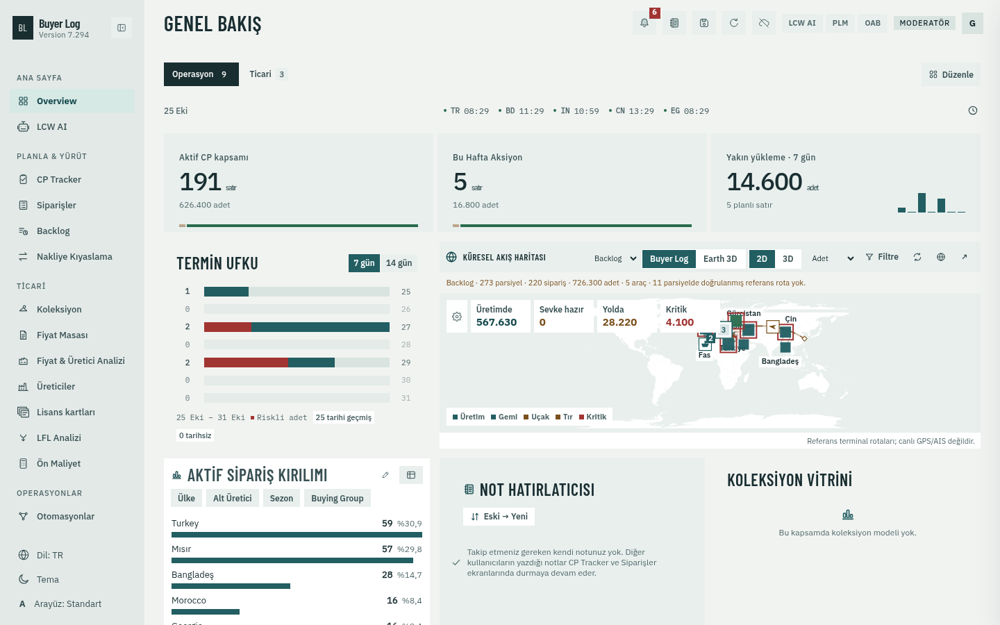

Buyer Log / Faz 0B / Geçici yerel prototipler
Aynı veri, iki tasarım yönü.
Overview ve CP Tracker, gerçek uygulamada anonim veriyle çalışıyor. Görüntüler 1440 × 900 ve standart arayüz boyutunda çekildi. Tam çözünürlük için görüntüye tıklayın.
A / Kartela
Kâğıt, iplik ve editoryal düzen
Ekru ve zeytin tonları; Source Serif 4 başlıklar, Barlow metin, Plex Mono kodlar. Açık KPI satırı, dikey termin grafiği, tonla ayrılan tablo satırları.

Kartela · Overview · Açık
B / Manifest
Teknik föy ve sevkiyat düzeni
Soğuk kâğıt ve petrol tonları; Plex Sans metin, Barlow Condensed başlıklar, Plex Mono kodlar. Sıkı hiyerarşi, yatay termin grafiği ve geniş lojistik haritası.

Manifest · Overview · Açık
Her iki konsept: Overview / Açık.